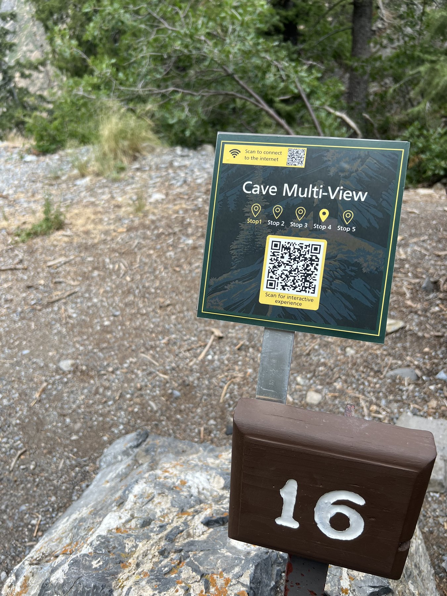
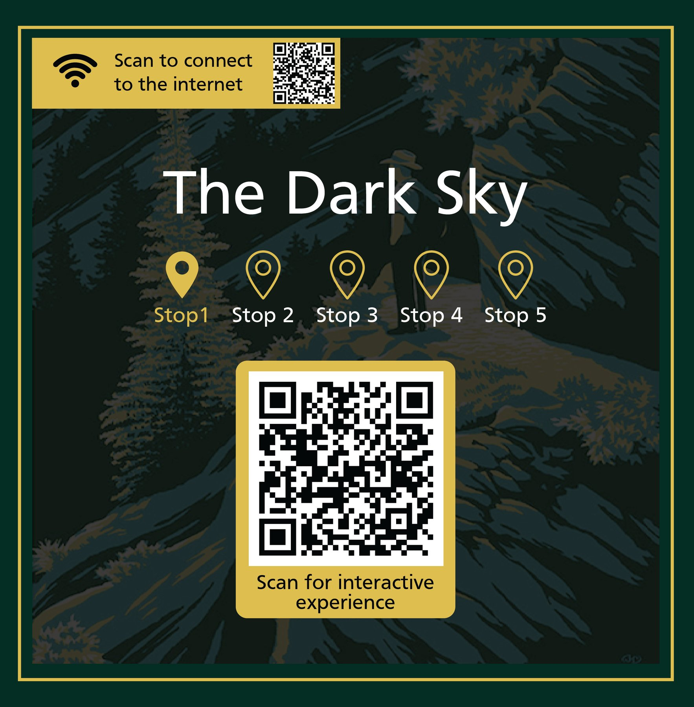
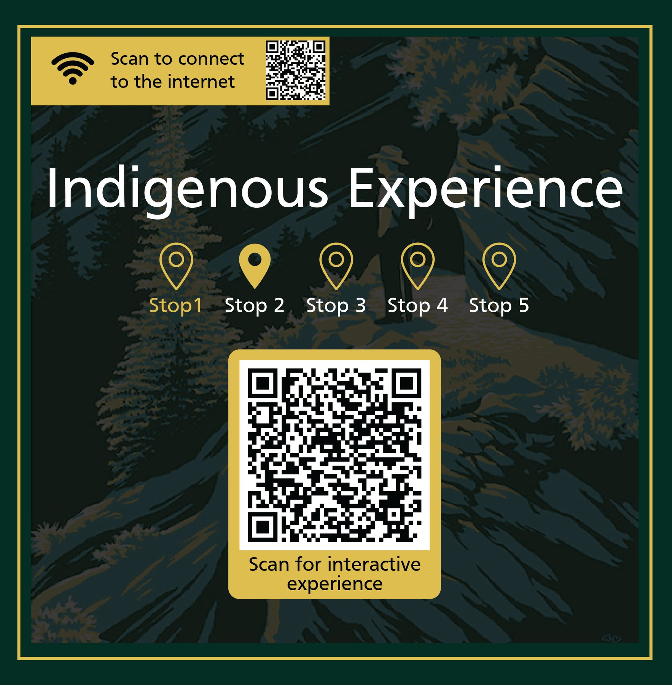
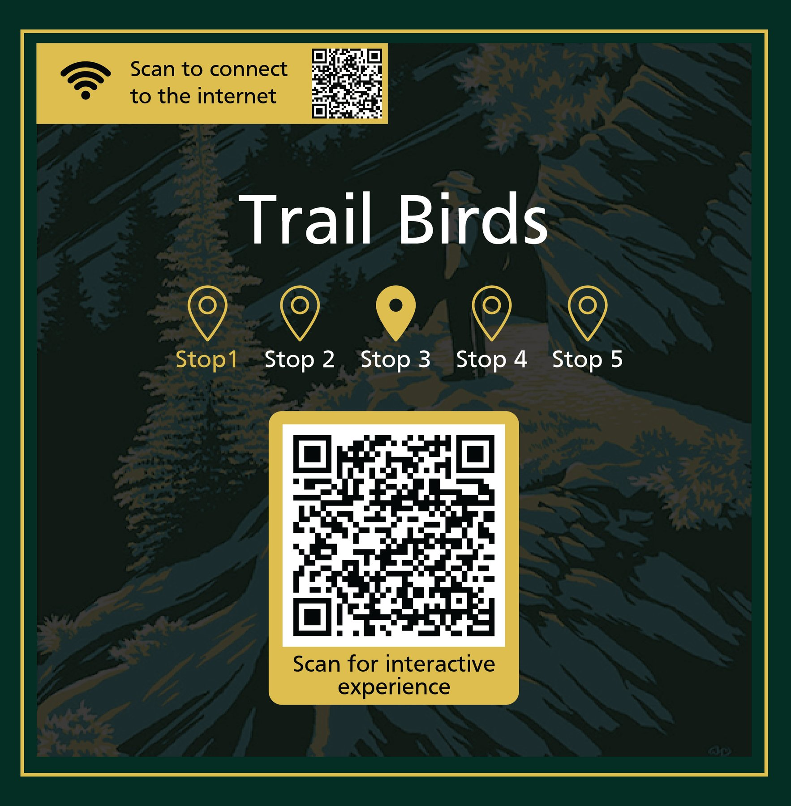
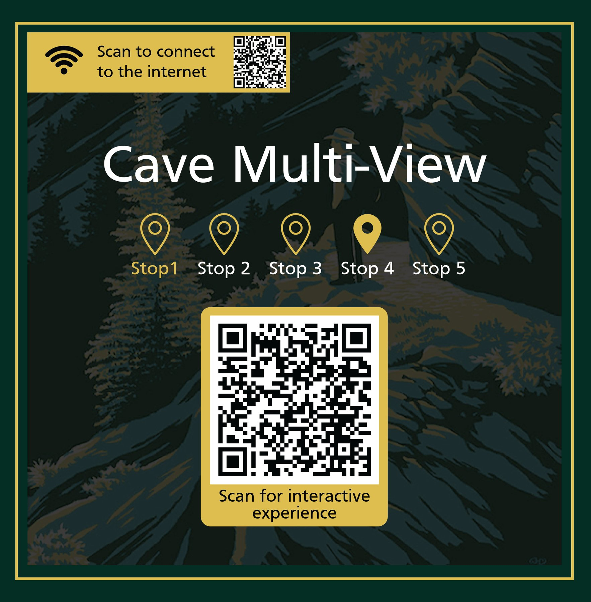
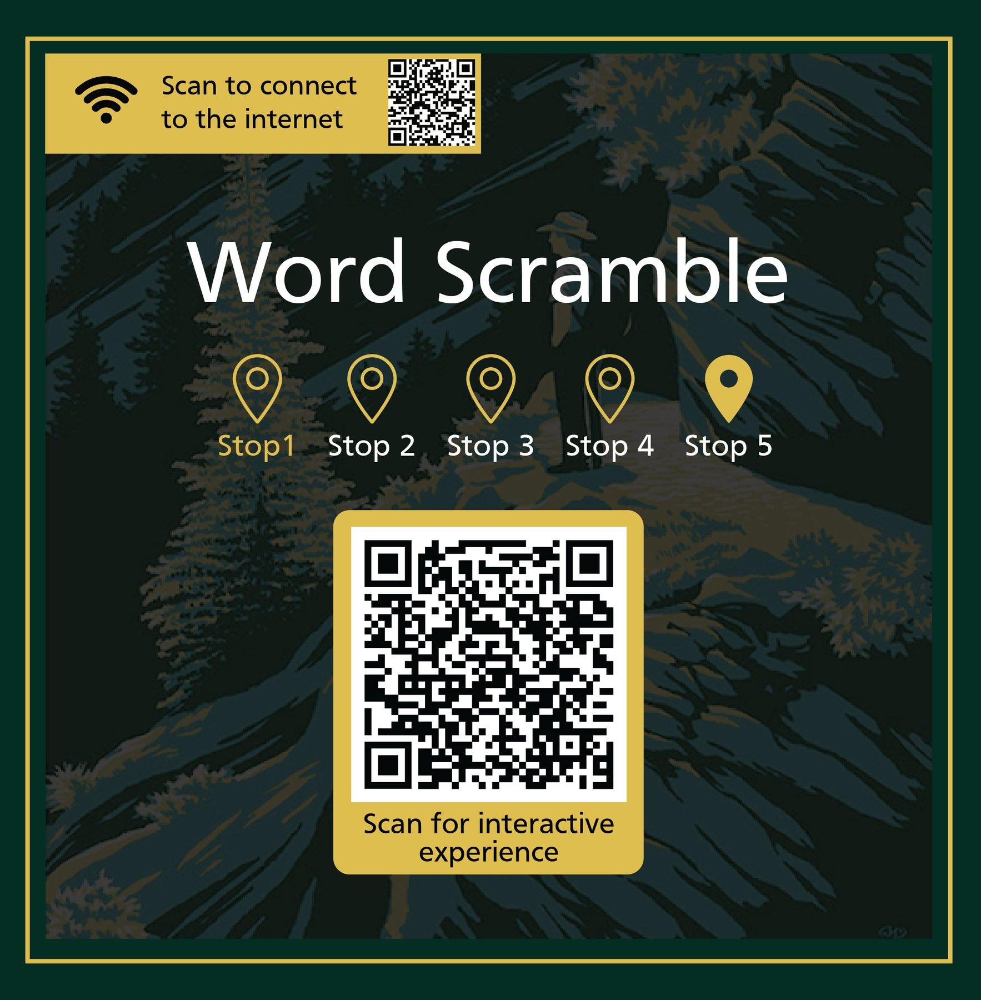
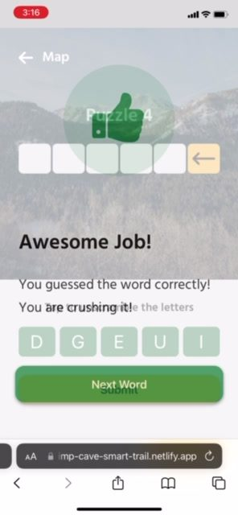
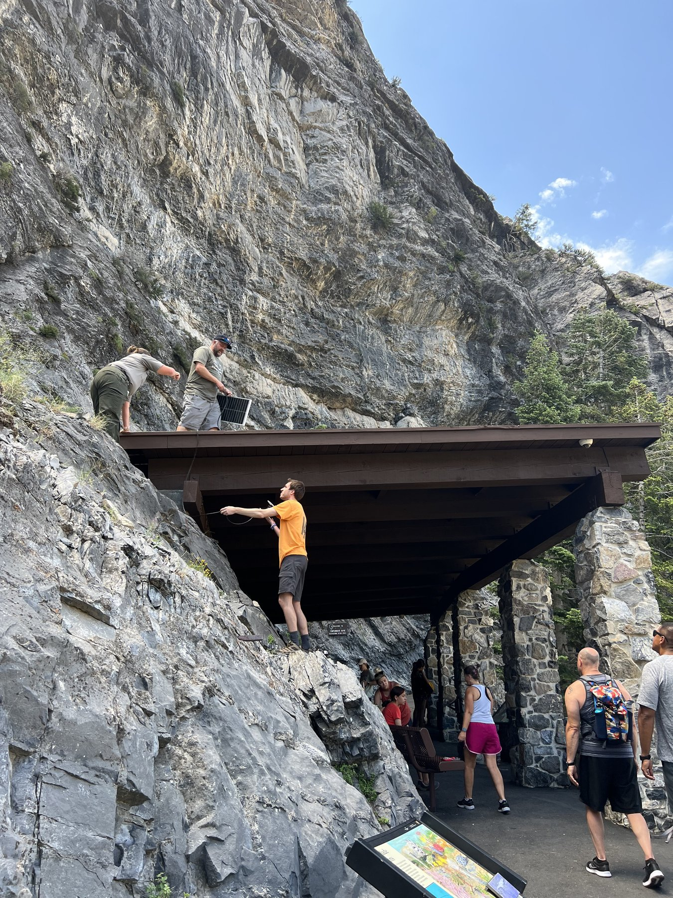
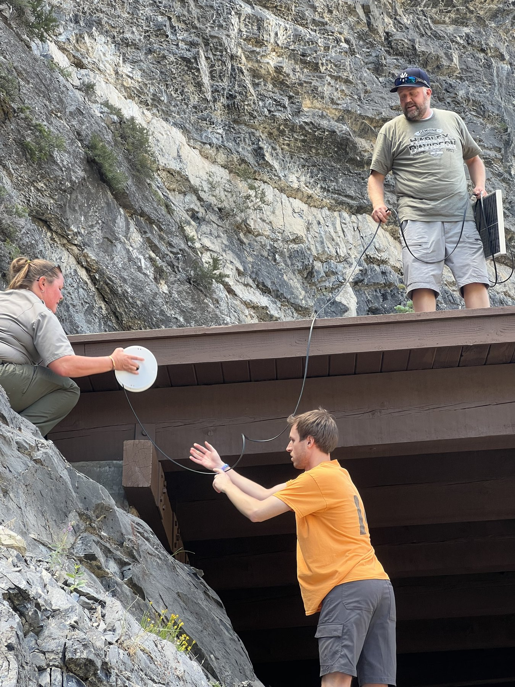

Signs that had to disappear into a mountain.
Five interactive stops up American Fork Canyon for the National Park Service. We designed the experiences, the signage, and installed the wifi they run on.
- Role
- UX/UI designer, on a team
- Client
- National Park Service
- Scope
- Five experiences, signage, wifi install
- Year
- 2022
- Status
- Live


The project
This was work for the National Park Service on the Timpanogos Cave Smart Trail, up American Fork Canyon in Utah. I was a UX/UI designer on the team.
The job was five experiences a hiker can take part in on their phone while walking the trail: The Dark Sky, Indigenous Experience, Trail Birds, Cave Multi-View and Word Scramble. Each sits at its own stop on the route.
The signage constraint
The Park Service's requirement shaped every visual decision. The signs had to be small, they had to be eye catching enough that a hiker would actually stop, and they had to blend into the mountain and the nature around them.
Those pull against each other. Anything loud enough to catch a walking hiker tends to be exactly what you do not want bolted to a canyon wall in a national monument.
The resolution is the palette. A deep forest green field and illustrated canyon artwork let the sign sit into the treeline from a distance, and a single warm yellow does all the attention-getting: the header bar, the stop markers, the frame around the QR code. Nothing else competes. Up close it is legible and clearly a park asset. From twenty feet down the trail it reads as part of the scenery.
One system, five stops
Every sign carries the same five location markers, with only the current stop filled in. So the sign is not just an entry point to one experience, it is also wayfinding: you learn there are five, and which one you are standing at, without any instruction text.
The rest of the layout is fixed across all five. The wifi instructions sit in the top bar, the experience title takes the centre, the stop markers run beneath it, and the QR code sits low in its own yellow panel with quiet space around it so it scans reliably in poor light.
We installed the wifi too
The reason every sign starts with "scan to connect to the internet" is that the connection did not exist before this project. None of these experiences work up a canyon without it.
So the team fitted it. We mounted a solar panel and a wifi access point on the shelter at the cave entrance, soldered the connections on site, and worked alongside Park Service staff to get it in place. Designing the experience and building the infrastructure it depends on turned out to be the same job.
Testing
Word Scramble went through usability testing with twelve respondents, six women and six men, aged 22 to 48, across eight prototypes. Seven of twelve preferred a straight back arrow because it communicated clearly that it deleted the selected letter. Only four of twelve understood the tap-to-edit letter selection, which was enough to drop that approach from every later design.
We also learned that arranging the letters in a circle looked better and tested worse. It added perceived complexity for no gain, so the tiles stayed in a line.
The Dark Sky experience was tested separately with eight respondents aged 16 to 60, on its second iteration, specifically to check whether the light-adjustment control was intuitive. Six of eight had no trouble with the toggle. Three of eight said the copy was confusing, or that the experience did not connect the light pollution data to the thing they were adjusting. That sent us back to the writing rather than the interface.
It is on the trail
The signs are installed, mounted to the Park Service's existing numbered trail markers rather than to new posts, so the system reads as part of the trail's own furniture instead of something added on top.
The full 59 page design document covers strategy, scope, structure, skeleton and surface, plus technical specifications, the project plan, budget, risk assessment and the testing data. Research participants are identified by code rather than by name. Download the design document (PDF, 12.5 MB).







Next project
UVU Engineering & Technology